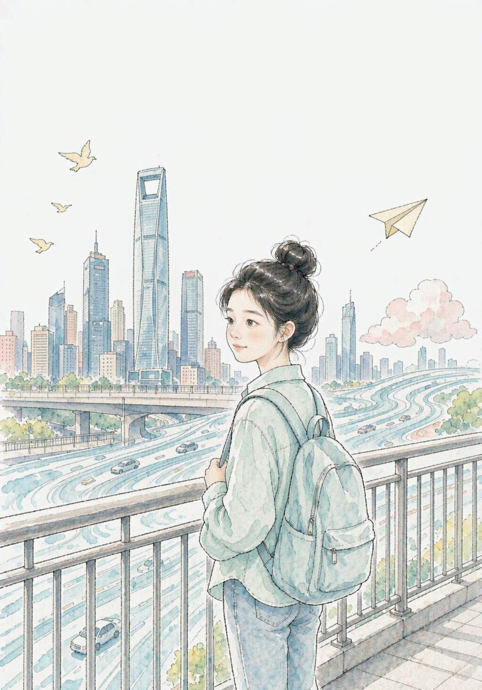
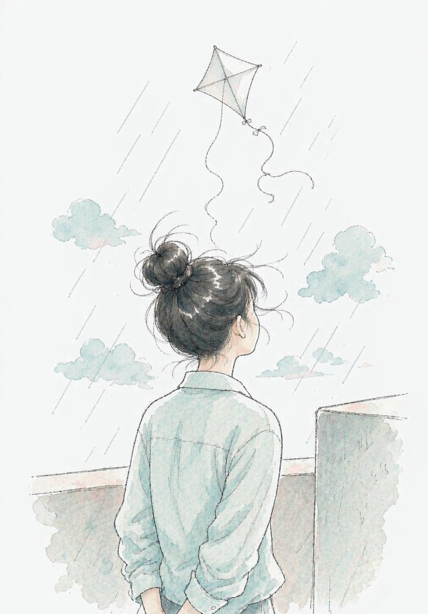
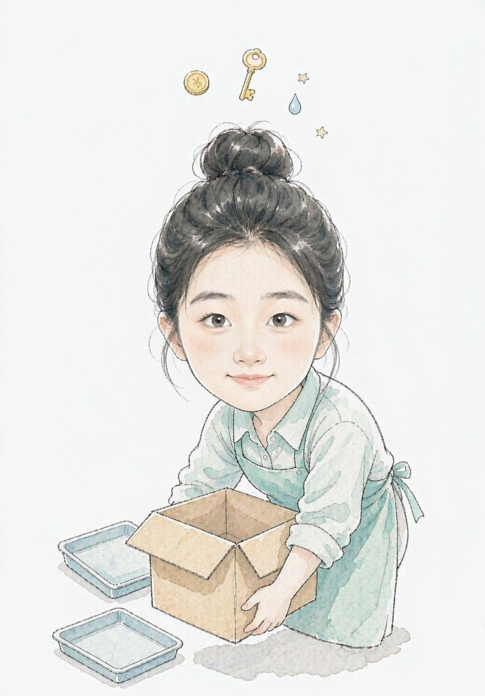
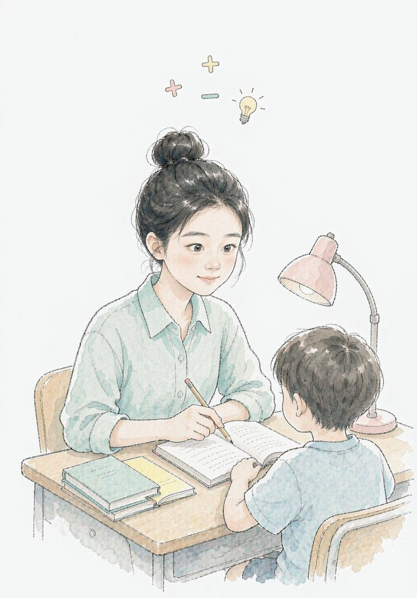
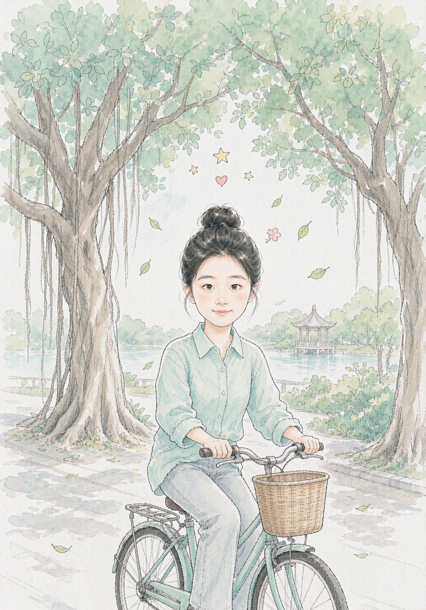
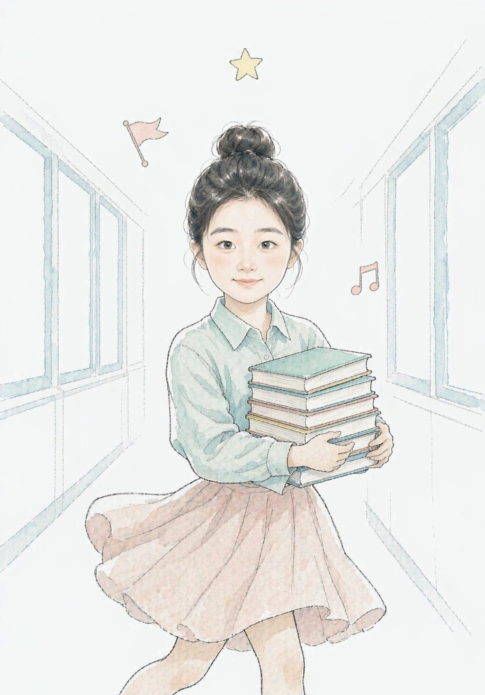
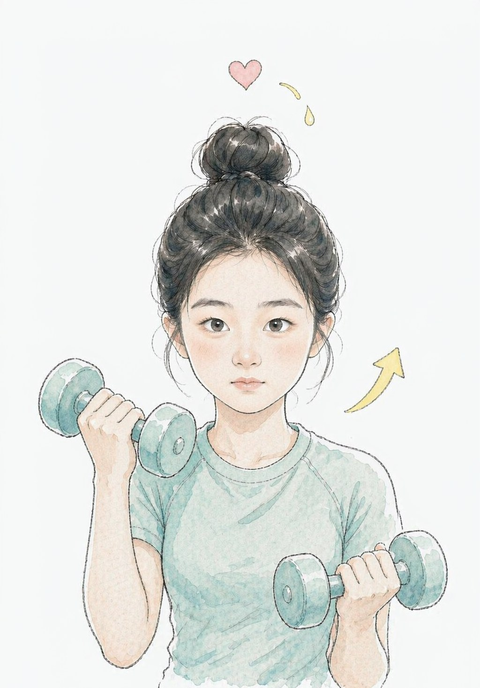
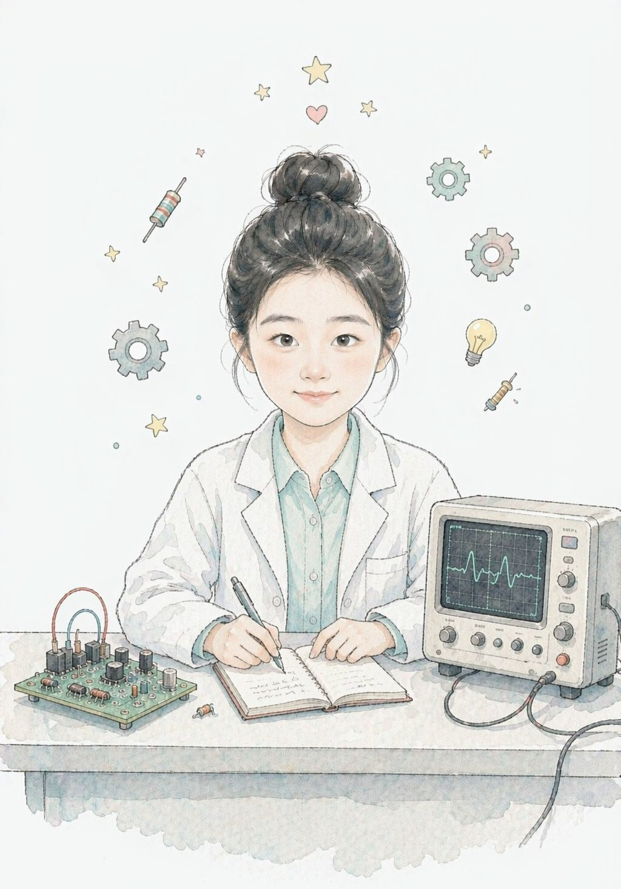
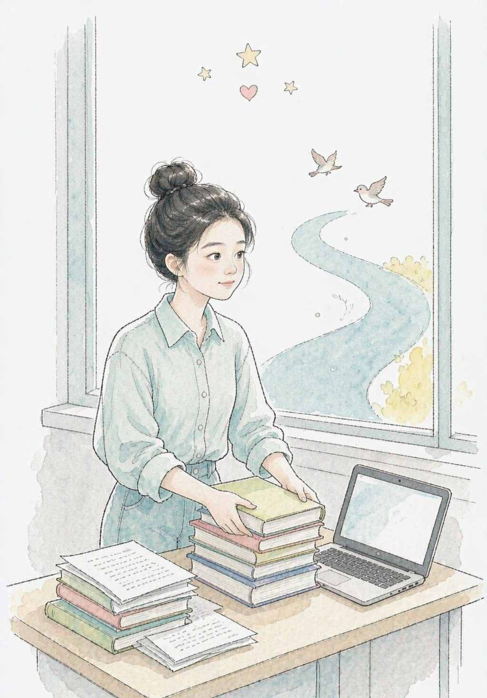
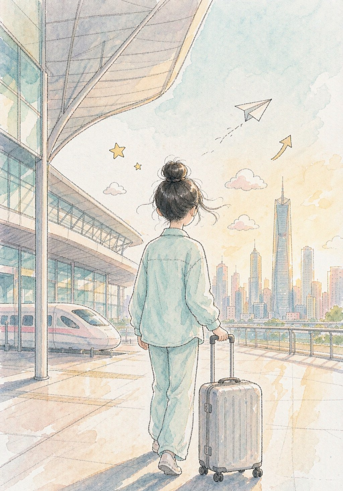

《作者与她的狗》 · 2026
AI 绘制 · 手写交互（鼠标移动时极轻微转向）
◉ 移动鼠标试试 · 它会看向你
◉ 移动鼠标试试 · 它会看向你
ROOM 01 — 展品 · WORKS
每件"作品"都有仓库、文档或指标作证 · 点击「延伸阅读」看创作过程
STM32F103 + ESP8266 通过 MQTT 接入华为云 IoT 平台，完成传感器上报与远程控制双向联调，连续运行稳定。含 FreeRTOS 多任务与外设驱动。
课上点亮 LED 之后，我想知道"设备怎么真正连上云"。目标是能在手机上看到家里的温湿度，并能远程关灯。
AT 指令的时序和超时最容易炸，加了重试与断线重连；Wi-Fi 掉线后要能自动恢复，这块我改了三版才稳定。
真实信用卡数据集构建欺诈检测模型，先切分后重采样防数据泄露，以 AUC 为主指标；用 SHAP 做可解释性分析，附 MODEL_CARD 与可复现脚本。
欺诈样本只占千分之一点几，模型很容易"全猜正常"还拿高分。所以我把指标口径放在第一位。
这批数据本身难分，AUC 大约在 0.85 量级——指标可以复现，脚本和参数都在仓库里。
OpenCV + 卷积网络做金属表面缺陷检测，完成预处理、数据增强与调优，F1 达 0.97，输出可视化结果与实验报告。
F1 达到 0.97；预处理前后对比、误判样本都可视化写进实验报告。
JavaFX + SQLite + JDBC 桌面成绩管理系统，支持增删改查、文件导入导出与统计图表，独立完成开发、文档与答辩。
从需求、编码、文档到现场答辩都是我一个人走完的——"交付给别人用"和"自己跑通"完全不是一回事。
基于公开入侵检测数据集做流量特征工程与多模型对比，输出混淆矩阵与误报分析——安全场景里，误报太多等于没法用。
入侵检测里"把正常流量判成攻击"的代价很高，所以我把误报单独拎出来分析，并在报告里说明了阈值怎么取更实用。
搭了一套可复用的自动化测试脚手架：用例管理、批量执行、失败重试与可视化报告，把重复的手工回归交给脚本。
改一次代码就要手动点十几遍，太容易漏。所以我把用例抽成数据驱动的结构。
AI 生成个人 IP 形象，再用我自己的审美反复迭代把关；全部交互与 SVG 图标手写实现。同一份内容做了四种展厅设计——你正在看的是美术馆版。
基于 ESP32 + ESP-IDF 完成一次完整的组件化嵌入式开发，把驱动 → RTOS → 图形界面 → 联网这条链路走通。
课上点亮 LED 之后，我想知道一块 MCU 到底能把多少东西塞进去还能稳定跑。所以给自己定的目标是：一个板子，同时读传感器、刷屏幕、连 Wi-Fi。
LVGL 刷新和传感器采集抢同一批资源，屏幕会卡成一帧一帧。后来把 UI 刷新单独拆成一个任务、用队列传数据才顺起来——这是我第一次真切体会到任务优先级。
课程里学完分组密码，我把它做成了一个真正能给别人用的前后端分离 Web 应用：后端三个 REST 接口，前端可视化加解密。
密码学课上一个尴尬的事实是：听懂原理 ≠ 能写出来。我想把这个等号补上，于是写了可以现场输入明文、生成密钥、加解密对照的小系统。
最难的不是加密本身，而是两端对不齐：填充、编码、IV 的处理只要有一处不一致就解不出来。我专门写了一组固定测试向量做前后端互测，才确认加解密真正对齐。
带领组员在两周内完成 1000+ 条经济数据的清洗、成本差异分析与时序预测建模，独立输出技术方案与分析报告。
想知道课上学的数据方法，放在真实、脏、口径不一致的数据上还灵不灵。竞赛是成本最低的一次验证机会。
第一次真切感受到「结论必须能被别人复算出来」。从那以后我的每个项目都留可复现脚本和参数，而不是只留一张结果截图。
这次展览不按时间排，按她是怎么长起来的排。三个展区，十件展品，全部来自她的这几年。
她在这里长大、上学。天桥下的车流像一条发光的河，她那时候就想：以后要在这里做点什么。

01
02
03和深圳完全不同的节奏。她在这里学会一件事：树是一年一年长高的，人也是。

04
05
06
07
08绕了一圈好像在原地。但她说：我已经不是原来那个人了。

09
10ROOM 02 — 艺术家 · ABOUT
沈炜丹，岭南师范学院计算机科学与技术专业 2027 届本科生，现居深圳。修满 160 学分，历年平均成绩 83.32，通过 CET-6，能顺畅阅读英文技术手册与芯片 Datasheet。
她享受从想法到实物的完整链路：查 datasheet、焊电路、调 MQTT、训模型、写页面。每个项目都做到"能交付"：有仓库、有文档、有可复现的指标。
技术之外，她是校大学生艺术团器乐队队长，统筹 50+ 名队员、组织 8 场校级活动。生活里自己做饭、养一只中华田园犬——它也挂在展厅正中央。
ROOM 03 — 手艺 · CRAFT
证书 & 荣誉 · CERTIFICATES
ROOM 04 — AI 展厅
这个展览本身就是一次 AI 实践：形象由 AI 生成、图标由我手写 SVG、交互代码由我理解原理后亲手实现。

ROOM 05 — 年表 · TIMELINE
接下来我要啃的 / NEXT 90 DAYS
内存管理 · 中断优先级 · 死锁与优先级反转排查
🎯 完成标志：写一个会死锁的小工程，再用 trace 工具定位并修好，配上笔记字符设备驱动框架 · DTB 基础 · 交叉编译
🎯 完成标志：在开发板上跑通一个能被 open/read/write 的驱动模块工业现场最常用的三种总线协议
🎯 完成标志：两块板之间用 Modbus 完成一次稳定收发并记录波形Unity / Ceedling，给 C 代码接上测试
🎯 完成标志：现有 STM32 工程的关键模块有可跑的单测PR 流程 · CI 自动跑测试 · 语义化提交
🎯 完成标志：某个仓库 push 即自动 lint + test + 出报告徽章RAG · Agent 工作流 · Prompt 版本管理
🎯 完成标志：做一个能查自己知识库的问答小工具并写清评测方法针对笔试：链表 / 树 / DP / 图
🎯 完成标志：连续 60 天，错题归档成自己的模板本把 CET-6 变成真正能用的能力
🎯 完成标志：产出一份中文要点笔记 + 一个小验证实验ROOM 06 — 问答 · Q&A
开题与方案阶段（在研）。我做的是方案层的工作：选题、器件选型、系统框图、控制策略设计。还没有做出实物，所以简历和这里我都不会写成"已完成"，也不会编造运行指标。
因为它们是同一条链路的两端：嵌入式让我知道数据是怎么从真实世界采集上来的，AI 让我知道这些数据还能变成什么判断。我不想只站在一端。
暂时没有。所以我把每个课程项目和个人项目都做到"能交付"的程度：有仓库、有文档、有可复现的指标。这也是我现在最想补上的一块。
通过 CET-6，能顺畅阅读英文技术手册、芯片 Datasheet 和官方文档，写英文注释和 README 没问题。
本科 2027 届，现居深圳。实习与校招机会都在看，深圳及湾区城市可以到岗，时间可以配合。